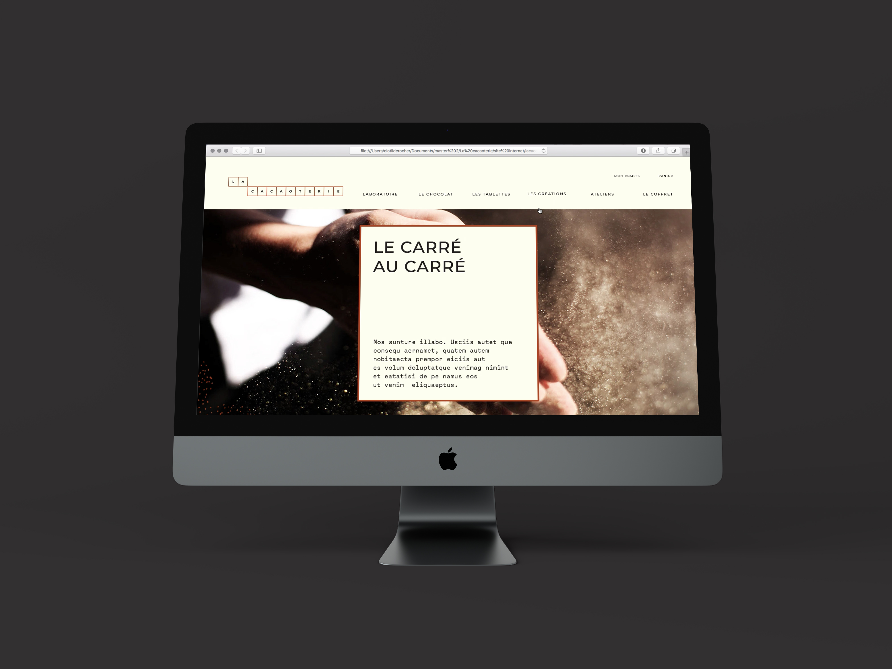
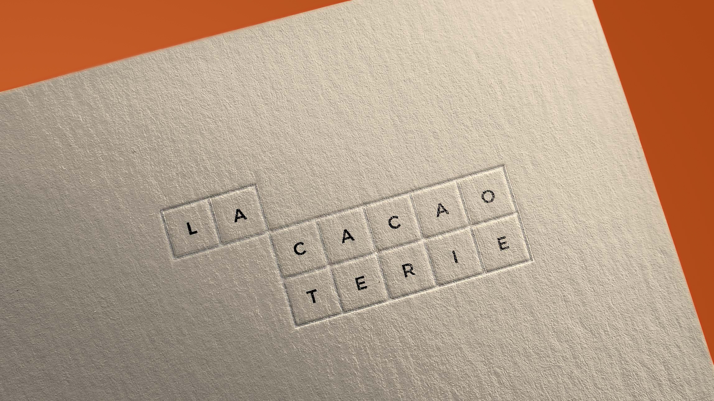
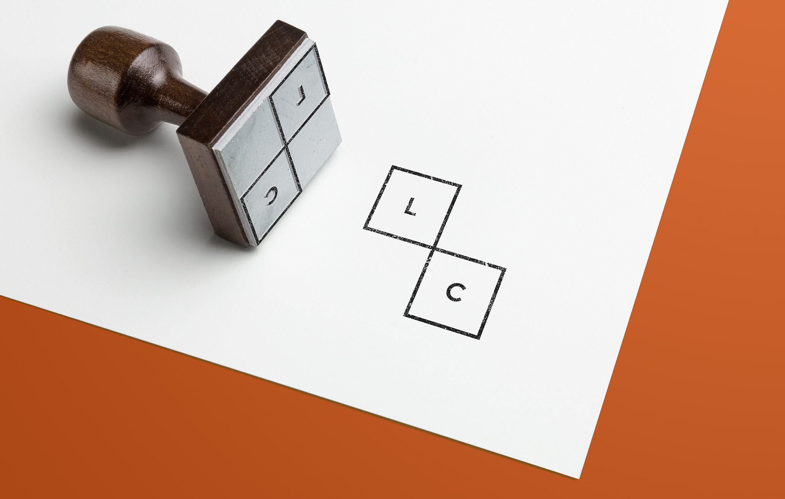
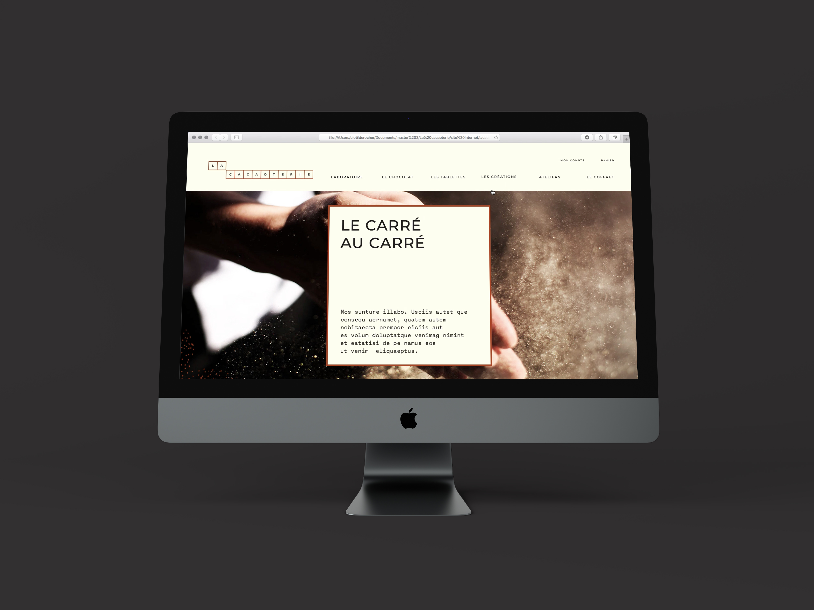
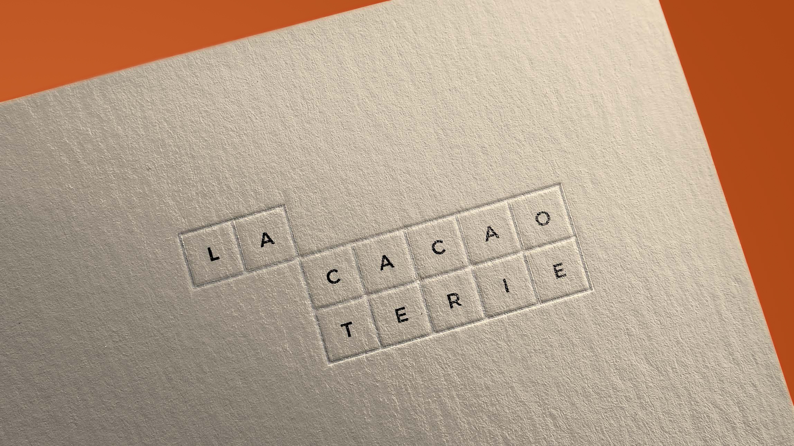
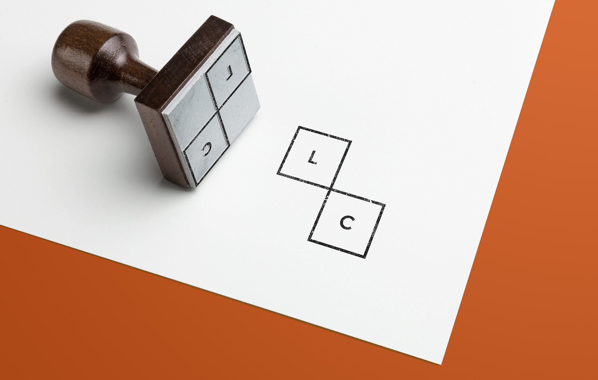
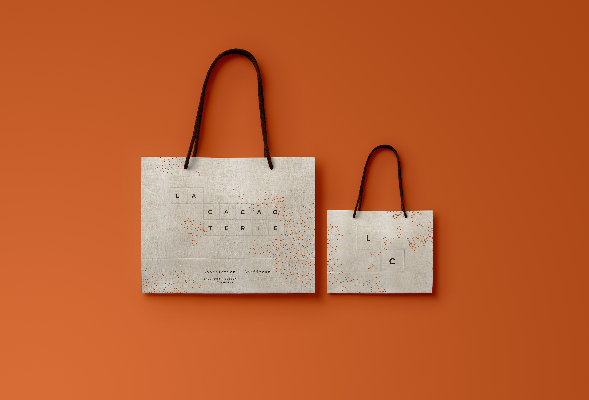
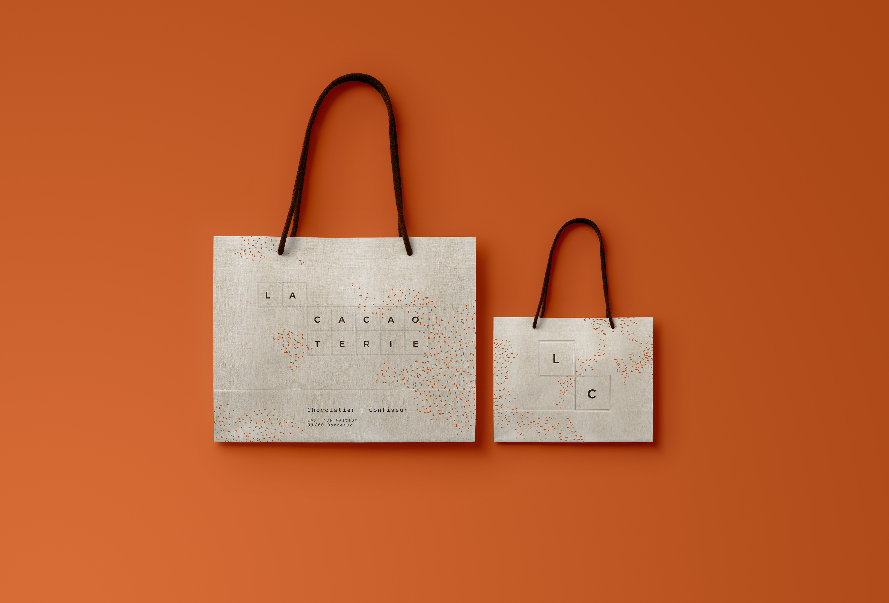

Work Team
 





 



La Cacaoterie
Logo, BrandingNous avons tenté de retranscrire certaines caractéristiques, ressenties lors de notre découverte de la Cacaoterie et de ses locaux :Textures, chaleur humaine, passion. La gestuelle et le partage sont donc au cœur de notre projet. Pour imaginer ce que pourrait être l’identité de la Cacaoterie, nous sommes partis d’un constat simple : À l’instar d’une tablette, composée de ses «modules de chocolats», les différents acteurs façonnent le projet de la Cacaoterie comme des carrés qui s’assemblent pour former un grand tout. Ainsi, à travers un système visuel modulaire, notre volonté est de montrer que c’est avant tout la richesse humaine qui est le fondement de leur entreprise. Ces petits producteurs et acteurs trop souvent éclipsés, réunis, deviennent La Cacaoterie. Chacun de ces métiers sont mis en avant et représentés, du petit artisan au cueilleur. Ils sont le fruit d’un riche travail en com Au-delà de l’aspect éthique et responsable et afin de respecter le raffinement et l'élégance du projet, nous avons décidé de n’utiliser qu’une seule couleur. Accompagné d’un noir, le orange cuivré vient rappeler la cabosse de la fève de cacao et le chocolat fondu, permettant de combiner également chaleur et esthétisme. Ainsi, le module mentionné précédemment, vient s’habiller de cette matière noble qu’est le cuivre. Le point névralgique de notre projet est l’utilisation d’un papier particulier. En plus d’apporter un toucher et une identité sensorielle unique, ses nervures viennent habiller la papeterie avec finesse. Cette identité est également portée par l’utilisation de la sérigraphie sur la plupart de nos supports. Cette méthode peu coûteuse possède de nombreux avantages. En plus d’un apport de texture, elle offre la possibilité d’utiliser des encres écologiques. Enfin, un dernier détail nous permet de jouer une fois de plus avec les sens. Le cadre autour du logo, sur tous les supports papiers, est traité en gaufrage, dans un souci de raffinement et d’élégance. C’est la touche finale qui apporte distinction et légèreté.